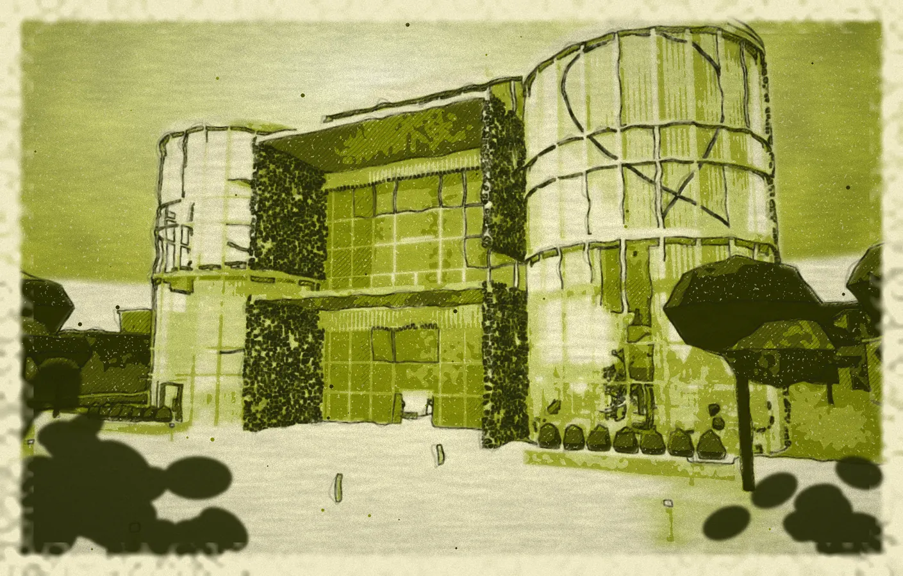

Project 808
Creating Chicago's manufacturing hub.
Strategy
Visual Design
Development
Approved for a 3-part series
Sponsored by Anthropic


Olive#808808


Light olive#DCDFB8




Olive glow#D6DC55


Ink#270F05


Cream#FCF7E6


The world of Project 808: my photos, my sketches of the space, concept images and palette. The workshops are concept images, not a built space.